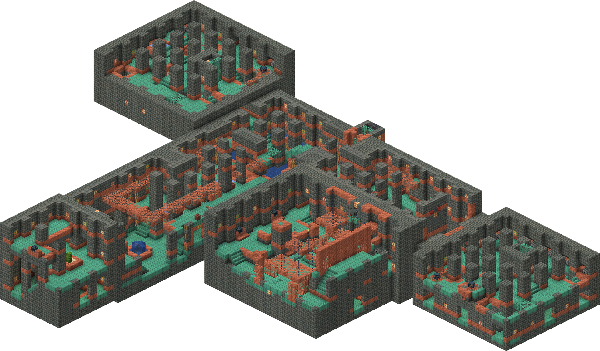
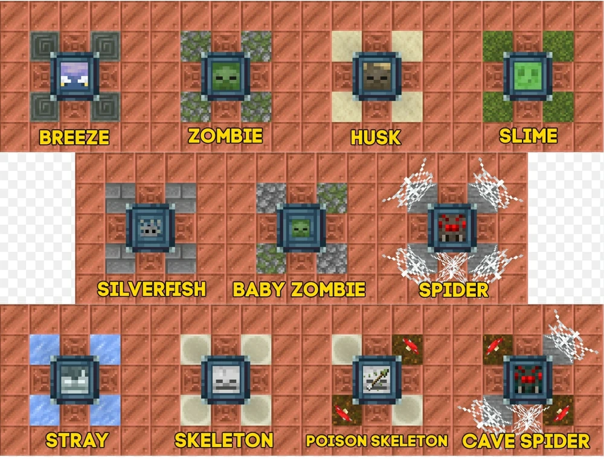

Description:
Trial Chambers is a famous structure in Minecraft that can be considered as one of the most difficult structures to beat/get loot from. It was added in update 1.21 in where it is a naturally generated underground structure (around y= -40 to -20 ) and contains various mobs from trial and ominous trial spawners.
Map/Layout of a Trial Chamber:
How to Locate:
You can locate this structure by using an explorer map of the trial chamber which can be bought from a cartographer villager when it reaches level 3 or you can use /locate structure command.
Mobs:
These are all the mobs that can be spawned in the trial chamber:
Loot:
Trial Chambers carry a variety of loot and access to potions and arrows with effects for low level players. You would need keys from spawners to unlock the regular and ominous trial vaults. The list of loot from regular vaults (not including chests) and their chances are in this link. The list of loot from ominous vaults and their chances are in this link.
How to Beat a Trial Chamber:
To successfully beat a trial chamber, you have to beat multiple waves of mobs that will spawn from the spawners around the structure. If you finish the waves of mobs from a spawner, there is a chance that the spawner will drop a trial key in where you can use that to unlock trial vaults around the structure. If you want to start an ominous trial after the regular one, you either need to bring an ominous bottle or get one from the regular trial drops. Although, be careful because the ominous trial is much harder than the regular one. To help you prepare for the trial chamber, I have made a checklist!
Why do you want to go to a Trial Chamber?
- Trial Chambers are the ONLY structure to get the heavy core, which is essential for crafting the Mace, which is the one of the most powerful weapons in the game. More information (from a source) is on this link. It is also the only structure that include the mob, Breezes.
- For players that don't have high quality gear/items yet, trial chamber is a good place to start to get good gear as it drops enchanted iron or diamond items.
- It tests your combat skills, offering both a regular trial and an even more challenging ominous trial.
- It is very fun and enjoyable despite its difficulty!